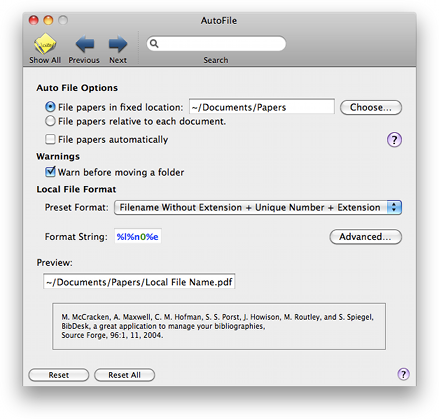
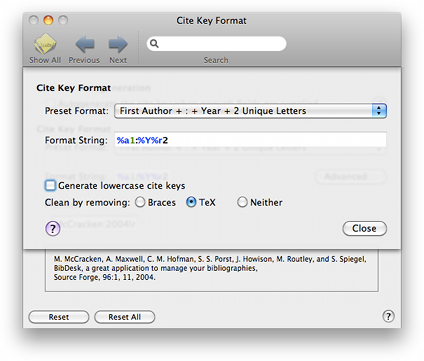

AutoFile AutoFile
AutoFile AutoFileAutoFile lets you choose a folder as your "Papers Folder" to automatically move files into when you link to them. You can do this to all files at once, or automatically as they are added. Use this preference pane to select the Papers Folder and to choose whether to automatically move files.

The upper series of checkboxes defines the base path to which the Local File format will be applied. This may be an absolute (fixed) or relative path. Relative paths are specified as a POSIX path relative to the document's path.
File papers in fixed location: Papers that are automatically filed by BibDesk will be moved to this folder or a subfolder. The format string used to generate the location of the moved papers is relative to this folder. When the papers folder is empty, the folder containing the document to which the items belong will be used. To get this behavior, deselect the checkbox.
File papers relative to each document: When this option is selected, the Local File format format will be appended to the BibTeX document's folder path; to modify this, insert a relative path as the first part of your format. This option is only available when the papers folder is empty. When you choose this option, make sure that any document is saved before activating AutoFile.
File papers automatically: When you select this option, BibDesk will automatically move files into the papers folder hierarchy for new items. The new location will be build using a format string, which you can supply using the other controls. See AutoFile for more information about the Auto File feature.
Local File Format: You can choose from several default cite key formats. Choosing "Custom" allows you to set the cite key format string to any valid format.
Warn before moving a folder: If you want to be warned before the auto file feature moves a folder, for example if you have accidentally linked your Home folder, rcheck this option.
For a more detailed control over the cite key generation, choose the "Advanced" button. This will reveal a editing sheet with the following additional items.

Preset Format: This is a copy of the popup button in the main pane.
Format String: This text field shows the format string that is used to automatically generate new locations for auto filed papers. The Local File format string can contain several special format specifiers, which are a %-character followed by a specifier character and optionally zero to two numbers. See Autogeneration Format Syntax for a more detailed description of the syntax. The generated string is interpreted as a file path relative to the Papers Folder.
Choose a format specifier to add: This allows you to easily add format specifiers at the end of the format string. This popup button will only be visible in custom mode.
Generate lowercase file names: Selecting this option will generate paths in all lowercase characters.
Clean by removing: You can set additional cleaning of generated parts of the parsed format string. Braces are normally used in BibTeX to protect parts of a string from capitalization. You can choose to remove those braces from the generated cite key. You can additionally choose to remove TeX commands. This will also remove the braces. The Windows option will remove also characters that are illegal in file names on Windows systems, so you can share the files with a Windows machine. Choosing the Non-ASCII option will ensure that the generated file name contains only ASCII characters; accented characters are converted if possible.